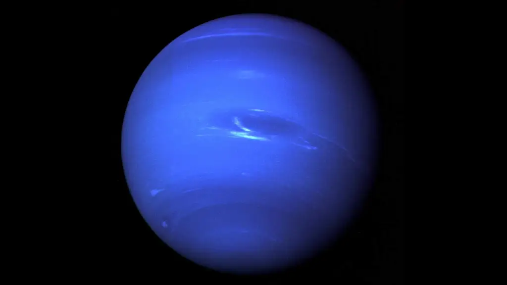

The Windy Planet
Neptune is the farthest planet from the Sun and has the strongest winds in the Solar System.
It appears deep blue because of methane in its atmosphere. Neptune is very windy and far away. It is the coldest of the planets.Neptune is the eighth and farthest known planet orbiting the Sun. It is the fourth-largest planet in the Solar System by diameter, the third-most-massive planet, and the densest giant planet. It is 17 times the mass of Earth. Compared to Uranus, its neighbouring ice giant, Neptune is slightly smaller, but more massive and denser. Being composed primarily of gases and liquids,[21] it has no well-defined solid surface. Neptune orbits the Sun once every 164.8 years at an orbital distance of 30.1 astronomical units (4.5 billion kilometres; 2.8 billion miles). It is named after the Roman god of the sea and has the astronomical symbol ♆, representing Neptune's trident.
